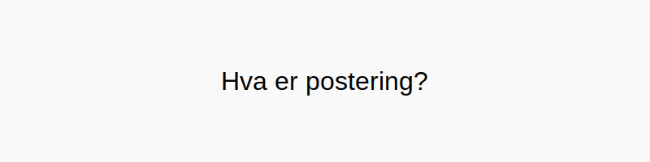
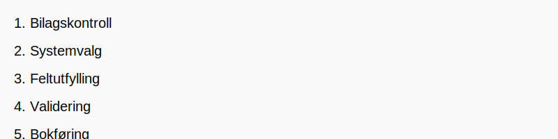

Postering er handlingen med å registrere konterte transaksjoner i regnskapssystemets hovedbok og tilhørende underbøker etter at transaksjonsdata er kodet gjennom kontering. Postering sikrer at alle økonomiske hendelser dokumenteres i bokføringen i samsvar med bokføringsloven og gir et nøyaktig grunnlag for finansrapportering.

Hva Betyr Postering?
Definisjon: Postering er det praktiske steget hvor konterte bilag føres inn i regnskapssystemet med riktig beløp, dato og referanser.
Posteringsprosessen Steg for Steg

- Bilagskontroll: Verifiser at bilaget er fullstendig og korrekt kontert.
- Systemvalg: Velg korrekt regnskapssystem eller modul for postering.
- Feltutfylling: Angi bilagsreferanse, dato, beløp, konto(er), og eventuell MVA-behandling.
- Validering: Sørg for at debet og kredit balanserer og at dataene er konsistente.
- Bokføring: Fullfør posteringen slik at posten låses og blir del av den permanente regnskapsloggen (revisjonsspor).
Typer Posteringer
| Type postering | Beskrivelse |
|---|---|
| Manuell postering | Registrering av transaksjoner direkte i systemet via skjermbilde eller maske. |
| Automatisk postering | Systemgenererte føringer basert på forhåndsdefinerte regler eller integrasjoner (f.eks. bankimport). |
| Korrigeringspostering | Justering av tidligere posteringer for å rette feil eller foreta periodisering. |
Praktiske Eksempler
# Eksempel 1: Innkjøp av varer, 12 500 kr inkl. MVA
Debet: 1460 Innkjøp av varer for videresalg 10 000 kr
Debet: 2700 Inngående MVA (25 %) 2 500 kr
Kredit: 2400 Leverandørgjeld 12 500 kr
# Eksempel 2: Salg på kreditt, 15 000 kr ekskl. MVA
Debet: 1500 Kundefordringer 18 750 kr
Kredit: 3000 Salgsinntekt 15 000 kr
Kredit: 2700 Utgående MVA (25 %) 3 750 kr
Vanlige Feil ved Postering
| Feiltype | Beskrivelse | Konsekvens |
|---|---|---|
| Feil konto | Postering på feil kontonummer | Feil rapporter |
| Ubalansert føring | Debet og kredit stemmer ikke | Avstemmingsavvik |
| Feil beløp | Manuelt inntastingsfeil | Økonomisk avvik |
| Manglende referanse | Utilstrekkelig beskrivelse eller bilagsnummer | Dårlig sporbarhet |
Digitale Verktøy for Postering
- Regnskapssystemer med bankintegrasjon: Automatiske forslag til postering av banktransaksjoner.
- OCR-basert fakturahåndtering: Leser inn faktura og foreslår postering.
- Malkonteringsregler: Standardiserte maler for hyppige transaksjoner.
- API-integrasjoner: Kobling mot ERP og fakturaportal for sanntidsføring.
Postering og Internkontroll
Korrekt postering er grunnlaget for en solid internkontroll og tydelig revisjonsspor:
Nøkkelkomponenter i internkontroll:
- Arbeidsdeling mellom den som konterer og den som godkjenner.
- Autorisasjonskontroller for hvem som kan poste hvilke typer transaksjoner.
- Revisjonsspor som dokumenterer alle endringer og godkjenninger.
Postering i Ulike Bransjer
Postering kan variere avhengig av bransje- og virksomhetstype:
- Handelsbedrifter: Fokus på varelagerstyring og kundefordringer.
- Tjenesteytende næring: Detaljert time- og kostnadsføring.
- Produksjonsbedrifter: Periodiske lager- og produksjonskostposteringer.
- Offentlig sektor: Strenge krav til dokumentasjon og budsjettskontroll.